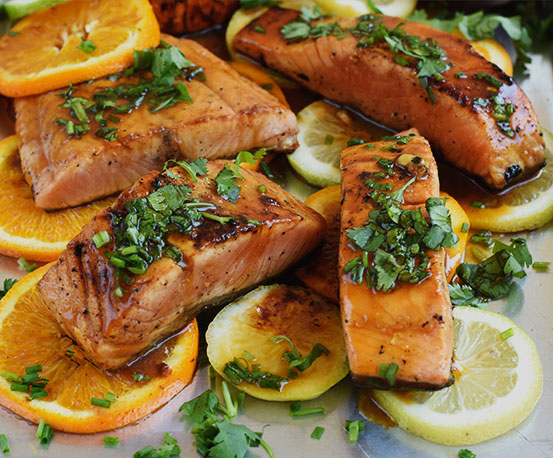

1 ½ tazas tomate pelado y machacado (6 tomates saladette)
2 botes salsa de tomate para pasta (360 gr cada uno o 2 ¾ tazas total)
Sal y pimienta, al gusto
400 gr requesón (2 tazas)
¼ taza queso parmesano
2 tazas queso mozzarella rallado (227 gr)
1 cucharita perejil picado
Elaboración
Saltea la cebolla con el aceite de oliva a fuego medio por 3 minutos. Agrega la zanahoria, apio, ajo y cocina unos 5 minutos.
Agrega la carne molida y cocina hasta que se dore, unos 4 a 6 minutos a fuego medio alto.
Agrega el puré de tomate, tomate pelado machacado, orégano, albahaca, tomillo y sal. Cocina a fuego bajo con la tapa puesta por 25 a 30 minutos. Prueba de sabor y si está muy ácida agrega el azúcar. Esto depende de que tan ácidos estaban los tomates y la salsa que usaste.
Cocina las láminas de pasta en abundante agua hirviendo salada hasta que estén al dente. Cuidado de que no se queden pegados entre ellos. Drena y cubre ligeramente con un poco de aceite de oliva cada lámina de pasta.
Mezcla el requesón, queso parmesano y perejil.
Engrasa ligeramente un molde de 13x9 pulgadas. Cubre ligeramente con la salsa. Cubre con 3 láminas de pasta. Agrega ⅓ de la salsa, ⅓ del queso mozzarella y la mitad de la mezcla del queso requesón.
Realiza otras 2 capas más terminando con queso mozzarella y parmesano extra si lo deseas.
Cubre el molde con papel aluminio sin que esté en contacto con el queso y hornea por 30 a 35 minutos a un horno precalentado a 200ºC. Pasado el tiempo, retira del horno, quita el aluminio y cocina 15 a 20 minutos más o hasta que la pasta esté bien cocida y el queso se haya gratinado.
Deje su Comentario
¿Cómo hacer Salmón a la mantequilla?

Ingredientes
Salmon
4 filetes de salmon
1 cucharita aceite de oliva
½ cebolla blanca, picada finamente
2 dientes de ajo, picados finamente
1 zanahoria, pelada y en cuadritos
1 varita de apio, en cuadritos
1 cucharita orégano seco
1 cucharita albahaca seca
Elaboración
Calentar el horno a 180°C.
Agrega la carne molida y cocina hasta que se dore, unos 4 a 6 minutos a fuego medio alto.
Agrega el puré de tomate, tomate pelado machacado, orégano, albahaca, tomillo y sal. Cocina a fuego bajo con la tapa puesta por 25 a 30 minutos. Prueba de sabor y si está muy ácida agrega el azúcar. Esto depende de que tan ácidos estaban los tomates y la salsa que usaste.
Cocina las láminas de pasta en abundante agua hirviendo salada hasta que estén al dente. Cuidado de que no se queden pegados entre ellos. Drena y cubre ligeramente con un poco de aceite de oliva cada lámina de pasta.
Mezcla el requesón, queso parmesano y perejil.
Engrasa ligeramente un molde de 13x9 pulgadas. Cubre ligeramente con la salsa. Cubre con 3 láminas de pasta. Agrega ⅓ de la salsa, ⅓ del queso mozzarella y la mitad de la mezcla del queso requesón.
Realiza otras 2 capas más terminando con queso mozzarella y parmesano extra si lo deseas.
Cubre el molde con papel aluminio sin que esté en contacto con el queso y hornea por 30 a 35 minutos a un horno precalentado a 200ºC. Pasado el tiempo, retira del horno, quita el aluminio y cocina 15 a 20 minutos más o hasta que la pasta esté bien cocida y el queso se haya gratinado.